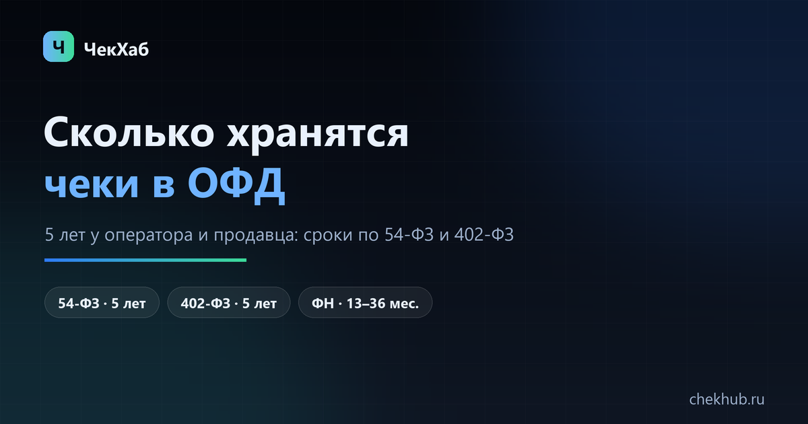

Сколько хранятся чеки в ОФД: сроки по закону и что делать с архивом
Фискальные документы хранятся 5 лет: столько их держит оператор фискальных данных, столько же обязан держать сам продавец. В личном кабинете видно меньше — глубина зависит от тарифа, а не от закона. Ниже — сроки в таблице, срок службы фискального накопителя и порядок действий, если нужного месяца в кабинете нет.

Пять лет — это не срок жизни чека в кабинете, а обязанность оператора и продавца хранить фискальные документы. Кабинет может показывать год, но документы за остальные четыре года у ОФД есть.
Если разбираться некогда
от 1 500 ₽ за кассу за месяц; год и сеть считаем по количеству касс и месяцев. Срок 1–3 рабочих дня на небольшую сеть.
Гарантия: если ваш ОФД не отдаёт данные за нужный период — вернём предоплату.
Как выглядит результат: пример файла выгрузки (CSV, данные тестовые).
Коротко: сколько хранятся чеки
Срок зависит не от чека, а от того, у кого он лежит. Одна и та же операция хранится в четырёх местах с разными правилами:
- У оператора фискальных данных (ОФД) — 5 лет с момента получения документа. Это обязанность оператора по 54-ФЗ (статья 4.5 «Обязанности оператора фискальных данных»).
- У продавца (пользователя ККТ) — тоже 5 лет: хранение фискальных документов прямо входит в обязанности пользователей по 54-ФЗ (статья 5).
- В личном кабинете ОФД — столько, сколько даёт тариф. Часто это год-два, иногда три. Это не законный срок хранения: документы у оператора есть, но интерфейс их не показывает.
- В фискальном накопителе (ФН) — 13, 15 или 36 месяцев. Это срок службы самого накопителя, а не срок хранения документов: ФН рассчитан на определённый объём записей и по его заполнении заменяется.
Отсюда главный практический вывод: если нужного месяца нет в кабинете, документы обычно не потеряны. Их надо запросить у оператора — по почте в поддержку или выгрузкой по API, если тариф это позволяет.
Таблица: кто сколько хранит
| Где лежат документы | Срок | Чем установлен |
|---|---|---|
| ОФД (оператор фискальных данных) | 5 лет с момента получения | 54-ФЗ, ст. 4.5 |
| Пользователь ККТ (продавец) | 5 лет | 54-ФЗ, ст. 5 |
| Первичные документы бухучёта | не менее 5 лет после отчётного года | 402-ФЗ, ст. 29 |
| Документы для налогов | 4 года | НК РФ, пп. 8 п. 1 ст. 23 |
| Личный кабинет ОФД | по тарифу: обычно 1–3 года | договор с оператором |
| Фискальный накопитель | 13 / 15 / 36 месяцев | 54-ФЗ, ст. 4.1 |
Сроки 5 и 4 года не противоречат друг другу: для налоговой достаточно четырёх лет, но бухгалтерскую первичку и фискальные документы нужно держать пять. Ориентируйтесь на больший срок.
Почему в кабинете видно только последний год
Кабинет ОФД — это сервис, а не архив. Оператор обязан хранить документы пять лет, но показывать их в интерфейсе — только в пределах оплаченного тарифа. На базовых тарифах глубина бывает 1–3 года, на расширенных больше. Поэтому типичная картина: «за прошлый месяц чеки есть, за позапрошлый год — пусто», хотя документы никуда не делись.
Что с этим делать по порядку:
- Проверить тариф и срок договора. В кабинете обычно видно и то, и другое: при истёкшем договоре доступ закрывается целиком, а не частично.
- Запросить период в поддержку. Формулировка, которая экономит неделю переписки: «нужны чеки за март 2025 по кассе с заводским номером … в Excel, с позициями». Указывайте кассу, период, тип документов и формат.
- Разбить период на части. Если отчёт не строится за длинный интервал, берите по месяцам или декадам — так работает почти в любом кабинете, включая выгрузку за месяц.
- Проверить передачу с кассы. Если данные обрываются на конкретной дате, дело не в тарифе: документы могли не уйти оператору. Смотрите статус передачи на самой кассе или в её личном кабинете.
Смена ОФД, снятие кассы и закрытие оператора
Сменили ОФД. Старые документы остались у прежнего оператора: он хранит их свои пять лет и обязан выдать по запросу. Новый оператор чужие документы не получает — ждать, что они «появятся сами», бессмысленно.
Сняли кассу с учёта. Документы привязаны к фискальному накопителю и остаются у оператора. Запрос делают по заводскому номеру кассы и периоду; в кабинете касса может уже не отображаться в списке активных.
Оператор прекратил работу. По 54-ФЗ фискальные данные передаются в налоговую, а архив принимает другой оператор — но получить копию быстро получается не всегда. Практический совет: выгружать и сохранять свои реестры заранее, не дожидаясь пятилетнего горизонта.
Подробный разбор ситуаций «кабинет пуст» — в статье «ОФД не отдаёт чеки за прошлый период».
Сколько хранить свои выгрузки
Пять лет — это и ответ на вопрос «как долго держать выгруженные файлы». Практика, которая закрывает почти все проверки и запросы:
- Реестр чеков за каждый месяц в Excel или CSV — по одному файлу на кассу; в имени файла дата и заводской номер.
- Отчёты о закрытии смены и итоги по Z-отчётам — они подтверждают выручку, даже если позиции не нужны.
- Копия в двух местах: рабочая папка и облако или внешний диск. Кабинеты меняют тарифы, доступы и интерфейсы — файл, сохранённый сегодня, завтра не пропадёт.
Как собирать длинный период без дублей — в статьях о выгрузке за год и о выгрузке в Excel. Ключ для склейки всегда один и тот же: номер фискального документа (ФД) + номер фискального накопителя (ФН) + фискальный признак документа (ФПД).
Что можно достать после пяти лет
Почти ничего: законный срок хранения истёк, и оператор не обязан отдавать документы старше. Остаются косвенные источники, которые не заменяют чеки, но позволяют объяснить расхождение: выписка по расчётному счёту, отчёт по эквайрингу, данные учётной системы, ранее сохранённые выгрузки и бумажные копии. Решение о достаточности документов принимает бухгалтер или налоговый орган.
Если архив нужен сейчас, а не через переписку
Реестр чеков за нужный период можно собрать под ключ: см. услугу выгрузки — Excel или CSV с реквизитами и позициями, без дублей и с расшифровкой признаков расчёта. Срок — 1–3 рабочих дня, от 1 500 ₽ за кассу за месяц.
Частые вопросы
Сколько лет ОФД хранит фискальные документы?
Пять лет с момента получения документа — это обязанность оператора по 54-ФЗ (статья 4.5). Глубина доступа в личном кабинете зависит от тарифа, поэтому старый период иногда виден только по запросу в поддержку.
Сколько лет продавец обязан хранить чеки?
Пять лет: хранение фискальных документов входит в обязанности пользователей ККТ по 54-ФЗ (статья 5). Первичные документы бухучёта хранятся не менее пяти лет после отчётного года (402-ФЗ, статья 29), документы для налогов — четыре года (НК РФ).
Почему в личном кабинете ОФД видно только последний год?
Тариф ограничивает глубину показа. Оператор хранит документы пять лет, но интерфейс отдаёт тот период, который оплачен. Проверьте тариф и срок договора, а нужный период запросите в поддержку с указанием кассы, дат и формата.
Сохранятся ли чеки, если сменить ОФД?
Да, но у прежнего оператора. Он хранит документы свои пять лет и обязан выдать их по запросу. Новый оператор документы, переданные другому ОФД, не получает.
Хранятся ли чеки после снятия кассы с учёта?
Да. Документы привязаны к фискальному накопителю и остаются у оператора; запрос делают по заводскому номеру кассы и периоду. В кабинете касса может уже не отображаться среди активных.
Сколько хранится фискальный накопитель?
13, 15 или 36 месяцев — это срок службы ФН, а не срок хранения документов. Накопитель рассчитан на определённый объём записей: когда он заполняется, его заменяют, а данные остаются у оператора.
Можно ли получить чеки старше пяти лет?
Как правило нет: срок хранения истёк. Остаются косвенные источники — выписка по счёту, отчёт по эквайрингу, данные учётной системы и ранее сохранённые выгрузки. Достаточность документов оценивает бухгалтер или налоговый орган.
Как часто выгружать чеки, чтобы архив всегда был под рукой?
Раз в месяц: один файл на кассу, в имени — дата и заводской номер. Тогда для проверки не придётся восстанавливать период через поддержку, а склейка года занимает минуты.